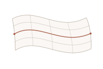
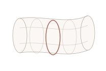

Laboratoire des Solides Irradiés
Research intern
Derived a linear-response relation for a non-local potential using time-dependent perturbation theory in the Hartree–Fock approximation. Explored its connection to the Bethe–Salpeter equation.
Physics · Trieste, Italy
I’m a physicist interested in high-energy physics and cosmology. My research experience spans many-body theory, scientific computing, and experimental projects.
BSc Physics (Honours)University of Khartoum · Trained at ICTP
01 Research
Work in electronic structure, statistical mechanics, and astrophysical data analysis.
Research intern
Derived a linear-response relation for a non-local potential using time-dependent perturbation theory in the Hartree–Fock approximation. Explored its connection to the Bethe–Salpeter equation.
PSI Start intern
Worked on the dimer solution of the Ising model while studying statistical mechanics, supersymmetric quantum mechanics, and numerical methods.
Trainee
Practiced data fitting and modelling for astrophysics applications.
02 Projects
I studied classical strings and quantized the open bosonic string in light-cone gauge. The project also covered D-branes, T-duality, and an introduction to the AdS/CFT correspondence.


Built a low-cost setup with 3D-printed parts and an Arduino Uno to estimate the size of particles suspended in liquid from their Mie scattering patterns.
Mie scattering on GitHubWrote a Python program that learns how words follow one another in song lyrics and uses those patterns to generate new sequences.
Markov chain project on GitHub04 CV
Education, training, and selected awards.
Postgraduate Diploma studies in Theoretical Physics (interrupted)
BSc Physics (Honours) · GPA 3.72/4.0
Electronic structure and many-body methods · Aussois, France
Many-body quantum mechanics and density functional theory · Online